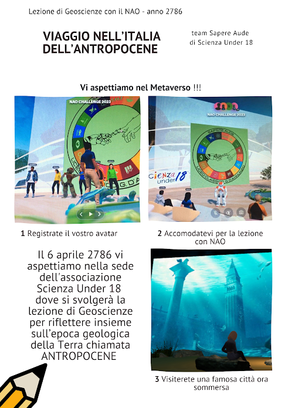

Spatial.io
Progetto
La nostra idea è quella di rendere il NAO elemento cardine della lotta per l'ambiente. Proprio per questo motivo nio abbiamo scelto di scegliere come partner l'associazione Scienza Under 18. Tuttavia ci siamo scontrati subito con il problema di come non rendere monotona una "lezione" del NAO su come tenere pulito l'ambiente e quali sono le regole da rispettare. Perciò abbiamo avuto l'idea di utilizzare una piattaforma di raltà virtuale, Spatial. Con Spatial siamo riusciti ad integrare meglio questo proposito inscenando un'improvvisa comparsa del NAO che viene dal futuro che parlerà dell'Antropocene e di Venezia sommersa. Durante l'incontro di Scienza Under 18 con i ragazzi delle media (locandina qui) ogni partecipante sarà in grado di accedere al nostro ambiente con il quale presenteremo immagini rendendo molto più stuzzicante l'incontro

Venezia sommersa
Antropocene
Collaborazione con SU18
Il progetto che noi proponiamo all'associazione consiste in un NAO capace di riconoscere i vari rifiuti e gettrali nei relativi cestini. Per riuscire a fare ciò noi utilizziamo 3 Nao Mark: carta, plastica e metallo. Riconosciuti gli oggetti noi passiamo al NAO i rifiuti che li butta negli appositi cestini. Un processo macchinoso sì, ma che copmunque può far risparmiare molto tempo.
La nostra idea è stata esposta in diverse occasioni. La prima volta è stata in occasione del Villeggio della Terra a Roma, in onore della giornata della terra. Si tratta di un evento nazionale dove c'erano vari stand in cui si mostrava come porre la tecnologia al servizio dell'ambiente. La seconda occasione è stato un incontro online con la Bicocca, un'università di Milano. Noi abbiamo esposto il nostro progetto ai decenti dell'università ed ad altri gruppi di ragazzi provenienti da tutta Italia. Il tema sempre lo stesso: la salvaguardia ambientale.

Hackathon NAO Challenge
Questo nostro progetto è inserito all'interno di una competizione a livello nazionale che coinvolge tutte le scuole di secondo grado. La NAO Challange è una sfida che siu articola in 2 fasi una selezione iniziale e la finale. Nella finale noi oltre a proporre il nostro progetto dobbiamo anche mostrare capacità di coordinamento e di gestione del lavoro attraverso un hackton. Noi saremo in macro-team caposti da 3/4 squadre. Il tema dell'hackaton quest'anno riguarda la salvaguardia delle coste. Per prepararci dobbiamo prendere ispirazione dal sito Guardiani della costa dove ci sono lezioni e video sull'argomento. Di solito questo mini progetto si conosce e realizza una volta arrivati nel luogo della finale. Quest'anno invece abbiamo la possibiiltà di iniziare prima. Noi insieme alle squadre NEW GEN di Caserta, Nao Sweet Home di Anzio, e NAO RANA di Bergamo, abbiamo ideato un telegiornale che conducono proprio i NAO. Durante la trasmissione ci saranno anche dei collegamenti con i NAO "inviati" sullle varie coste e che spiegheranno da veri teleporter i problemi delle coste italiane.

 Liceo Classico G. D'Annunzio
Liceo Classico G. D'Annunzio
 Pagina Facebook Sapere Aude: Sapere Aude Nao
Pagina Facebook Sapere Aude: Sapere Aude Nao
 Pagina Instagram Sapere Aude: @sapereaude_lc
Pagina Instagram Sapere Aude: @sapereaude_lc

Indirizzo mail: liceoclassicopesapereraude@gmail.com
 Canale Youtube Sapere Aude
Canale Youtube Sapere Aude